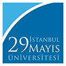

Üniversite Ana Sayfası
Bütünleşik Kalite Yönetim Sistemi

İstanbul 29 Mayıs Üniversitesi
Kalite Güvence Sistemi
ANA SAYFA
HAKKIMIZDA
Misyon & Vizyon
Değerlerimiz
Sayılarla Üniversitemiz
İlgili Mevzuat
Kalite Güv. ve Akreditasyon Koordinatörlüğü
Kalite Komisyonları
Kalite Komisyonu
Kalite Alt Komisyonları
Öğrenci Kalite Komisyonu
Uyg. ve Araştırma Merkezleri Kalite Alt Kom.
Organizasyon Şemaları
Kalite Etkinlik Alanları ve PUKÖ Döngüleri
Ölçme, Değerlendirme ve İyileştirme Komisyonu
Süreç El Kitabı Hazırlama Komisyonu
Danışma Kurulları
POLİTİKALAR
Kalite Politikası
Araştırma-Geliştirme
Eğitim-Öğretim
Kurumsal Gelişim
Toplumsal Katkı
Uluslararasılaşma
Uzaktan Eğitim Politikası
Bilgi Güvenliği
KALİTE DOKÜMANLARI
Stratejik Plan
İş Akış Süreçleri
Görev Tanımları
Prosedürler
Sertifikalarımız
Kalite Etkinlikleri
İZLEME VE DEĞERLENDİRME
Kurum İçi İzleme
İç Değerlendirme Raporları
Faaliyet Raporları
Öz Değerlendirme Raporları
Akran Değerlendirme Raporları
YÖK / YÖKAK İzlemeleri
Dış Değerlendirme Geri Bildirim Raporu
Dış Değerlendirme Kurumsal İzleme Raporu
Vakıf Yükseköğretim Kurumları Raporu
Yıllara Göre Değişim
Diğer İzlemeler
TÜBA-TÜMA Raporları
İYİLEŞTİRME
Liderlik, Yönetişim ve Kalite
Eğitim & Öğretim
Araştırma Geliştirme
Toplumsal Katkı
Kurumsal Performans Göstergeleri
GELECEĞE BAKIŞ
Akreditasyon
Program Akreditasyonları
Kurum Akreditasyonları
Vizyon ve Programlar
2030 Vizyonu
Kurumsal Dönüşüm Kapasitesi
Kurumsal Akreditasyon Programı (KAP)
Ara
Misyon ve Vizyon
Ana Sayfa
/
Geleceğe Bakış
/
Misyon & Vizyon
İndir
Kapat